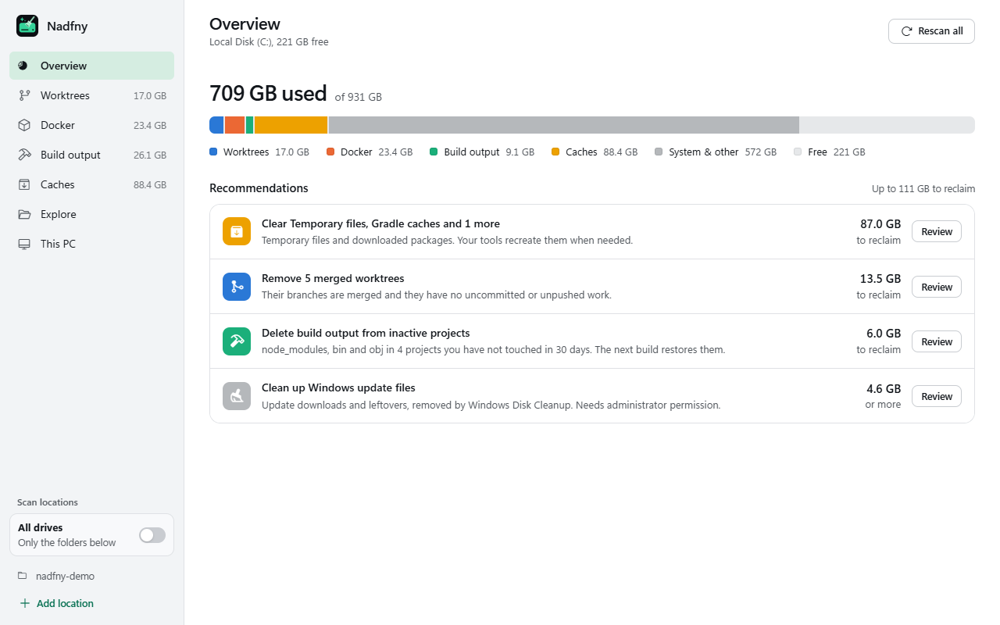
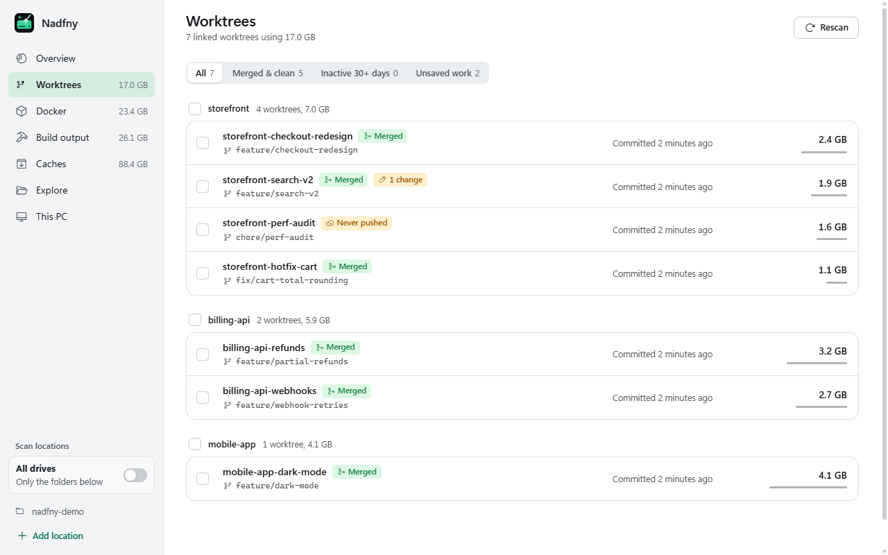
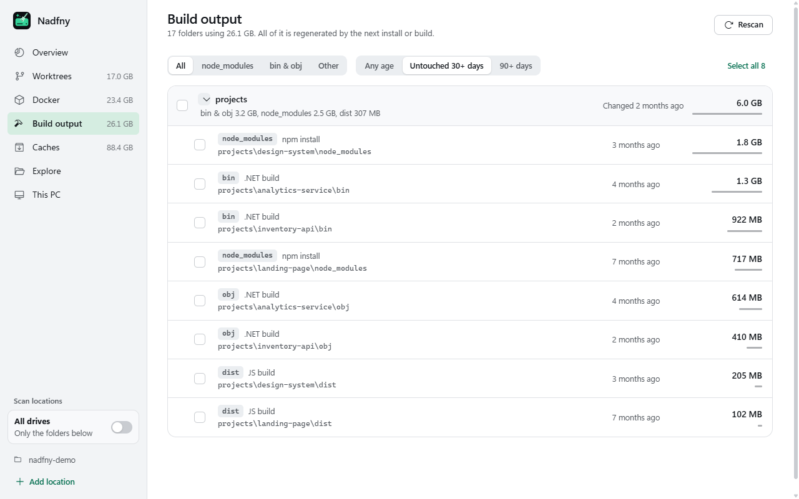
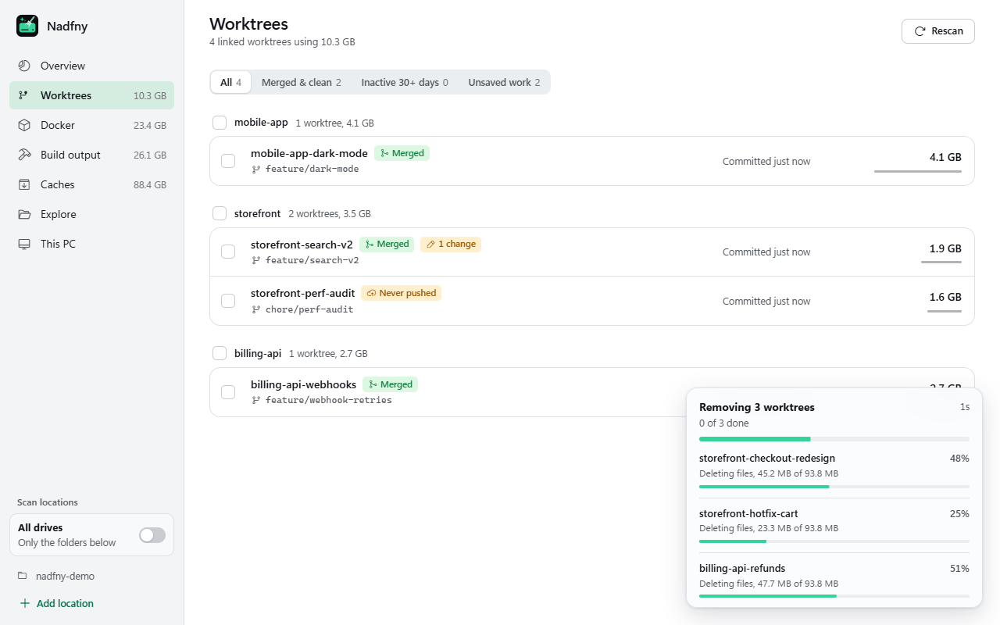

Get your disk back.
Nadfny finds the gigabytes developers lose to git worktrees, Docker, node_modules and caches, then cleans them up without touching your work.
نضّفني (Nadfny) is Egyptian Arabic for "clean me".

- 11 s
- to scan three drives and 120,000 folders for build output
- 1.1 s
- until removed worktrees leave the list, while files clear in the background
- 2x
- faster deletes than Windows' own, without freezing the app
- 0
- hand-written source files in the build output it offers to delete
Built for the mess developers make
Generic cleaners empty the Recycle Bin. Your space went to forgotten worktrees, Docker layers and a node_modules in every project you ever cloned.
Every worktree, sized and labelled
One list for every linked worktree across your repositories.
- Badges for merged, uncommitted changes, unpushed and never pushed.
- A "Merged & clean" filter finds the ones that are safe to drop.
- Remove several at once, optionally with their local branches.

Build output, by project and age
node_modules, bin and obj, dist, target, .next, .venv and more.
- Filter to projects untouched for 30 or 90 days.
- Kept automatically if a folder holds git-tracked files or hand-written code.
- Your next install or build brings it back.

Docker
Build cache, images, containers and volumes with real sizes, one-click prunes, and compaction of Docker's WSL disk so the space returns to Windows.
Caches
npm, pnpm, Yarn, NuGet, pip, Gradle, Maven, Playwright and Temp, plus Windows update leftovers through Windows' own Disk Cleanup.
All drives
Point it at your project folders, or flip one switch to scan every local disk with live progress.
This PC
CPU, GPU with real VRAM, every RAM stick and drive, with copy buttons. It even spots RAM running below its rated speed.
Built to never lose your work
Deleting is the easy part. Nadfny is designed around not deleting the wrong thing.

- Every delete names what it removesA confirmation shows exactly what goes and how big it is.
- Unsaved work needs an extra yesUncommitted changes, unpushed commits, locks, or a git status it could not read all count as risky.
- Re-checked right before removalIf you edited a worktree after the scan, it is kept.
- Your source code staysBuild output with git-tracked files or hand-written code inside is never deleted.
- System folders are off limitsWindows, Program Files, your profile and AppData are refused by the deletion engine itself.
- Fast, visible, resumableDeletes run in the background with live progress and finish next launch if you close the app midway.
Download Nadfny
Free and open source, for Windows 10 and 11.
- No admin rights
- Updates itself
- SHA-256 checksums
- .NET included
Nadfny is not code-signed yet, so Windows SmartScreen may warn the first time. Choose More info, then Run anyway. Needs the WebView2 Runtime, which Windows 11 already includes.